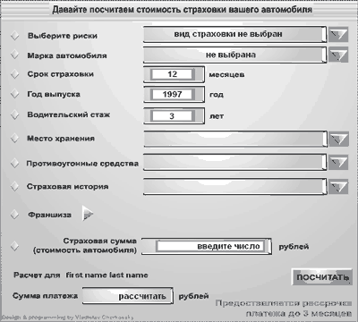
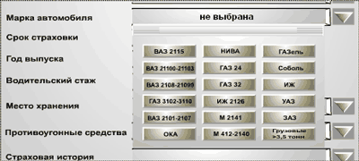
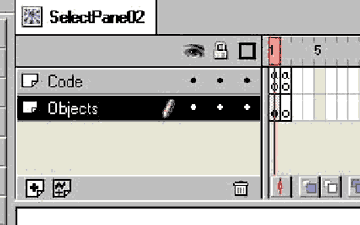
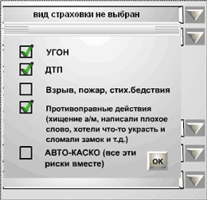

dealer1@chat.ru
Один из вариантов применения Flash-технологии - создание небольших приложений на стороне клиента. В статье в качестве примера рассматривается создание на Web-сайте калькулятора для расчета страховки автомобиля.
Фирма Macromedia (http://www.macromedia.com) со своим Flash удачно уловила ожидания рынка и создала превосходный продукт. Однако дело не в одной, пусть даже очень хорошей, программе. Сегодня жизнь часто требует от профессионала в области информационных технологий выбирать средства в зависимости от поставленной задачи, и иногда приходится буквально за несколько дней осваивать новый язык или новый программный продукт. Предлагаемые ниже методики решения некоторых задач в области создания Web-сайтов не требуют долгого изучения. Опытный программист может сразу использовать эту методику в своих разработках. Человеку, имеющему более скромный опыт программирования, потребуется некоторое время для усвоения базовых концепций, после чего он сможет постепенно увеличивать сложность своих разработок по мере приобретения опыта.
В этой статье мы рассмотрим весьма интересный вопрос применения Flash-технологии - создание небольших приложений на стороне клиента. Это может быть полезно как для программистов, так и для дизайнеров. Программисты часто неоправданно проходят мимо возможностей, открываемых Flash, поскольку уже имеют в своем распоряжении достаточно мощных средств. Дизайнеры иногда просто не догадываются, что Flash можно применять не только для создания intro, меню и красивых элементов дизайна сайта. Таким образом, эта статья - для тех, кто не ленится добавлять в свой арсенал новые средства и не боится браться за изучение новых инструментов.
Где применять Flash
В ходе строительства Web-узла постоянно приходится решать проблему выбора той или иной технологии. Окончательный выбор зависит, как правило, от двух факторов: поставленной задачи и арсенала средств, которым владеет разработчик или команда разработчиков.
Можно выделить три подхода к решению задач программирования для сети: либо приложение выполняется целиком на машине клиента, не обращаясь к серверу, либо такое приложение выполняет лишь часть операций, а прочие остаются серверу, либо практически всю работу выполняют серверные программы.
Решение некоторых задач на стороне сервера бывает предпочтительнее, а иногда просто не имеет альтернативы. Но программисты всегда стремились снизить нагрузку на сервер…
Итак, мы будем рассматривать построение клиентских приложений с помощью Flash. Обсудим, когда следует применять эту технологию, а когда лучше обратиться к традиционным методикам JavaScript, Java, VBScript.
Во-первых, нужно четко понимать, что Flash не создавался для программирования больших приложений. ActionScript четвертой версии весьма неуклюж с точки зрения любого сведущего в программировании. Основное его предназначение - управление последовательностью проигрывания фильма, подгрузка ресурсов с сервера, обработка взаимодействия фильма и пользователя. В этом языке отсутствуют средства создания и работы с массивами, обработка математических функций; весьма скромны средства работы со строками. В пятой версии язык кардинально изменился и стал похож на большинство других языков программирования для Интернета, но мы пока рассмотрим пример, выполненный на ActionScript четвертой версии, поскольку для начинающих программистов и Web-дизайнеров эта версия легче для понимания. В то же время переход на пятую версию при накоплении определенного опыта не вызовет проблем.
Итак, основную нишу в программировании клиентских приложений, в которой у технологии Flash нет конкурентов, можно определить как небольшие приложения с несложными математическими вычислениями и разбором текста, где требуется уникальный интерфейс, а время разработки ограничено. Это различные калькуляторы, экзаменующие системы, игры, средства для построения графиков, несложных чертежей (здесь мы не касаемся приложений, которые не могут обойтись без взаимодействия с сервером).
Применение Flash для таких приложений открывает для дизайнера массу возможностей (ограниченных только его фантазией) при создании пользовательского интерфейса. Вместо того, чтобы соединять несколько технологий в решении одной задачи, можно все делать в одной программе - редакторе фильмов Flash и тут же отлаживать полученный результат. Причем, по данным фирмы Macromedia, у почти 95% пользователей Интернета уже установлен плейер для воспроизведения flash-фильмов. А теперь перейдем к рассмотрению конкретного примера, на котором можно продемонстрировать применение технологии Flash для разработки конкретного приложения.
Постановка задачи
В качестве примера мы создадим калькулятор для расчета страховки автомобиля. Когда разрабатывался сайт одной страховой компании, клиенты, в частности, высказали пожелание сделать калькулятор для быстрого расчета размера страхового платежа при страховании автотранспорта, стоимости полиса гражданской ответственности и некоторых видов имущественного страхования. Мы рассмотрим только первую задачу - расчет страховки автомобиля (второй случай гораздо проще и не так интересен).
Анализ условий задачи показал, что, несмотря на значительное количество оговорок и исключений, схема расчета страховки автотранспорта достаточно четко выверена и легко поддается алгоритмизации.
При выборе инструмента реализации были приняты во внимание следующие обстоятельства.
- Математические вычисления были достаточно просты и сводились к выполнению арифметических операций, проверкам условий, округления до целого и т.п.
- Желательно было уйти от традиционного интерфейса анкетных форм, преобладающего в сети. Нужно было дать пользователю возможность "поиграть" с интерфейсом, изменяя исходные значения расчета столько раз, сколько он пожелает, и получая результат немедленно. Все ошибки желательно было обрабатывать тут же.
- Желательно было обойтись без взаимодействия с сервером при выполнении вычислений.
- Естественно, сказался и тот фактор, что автор этих строк был уже достаточно хорошо знаком с технологией Flash и имел опыт программирования на ActionScript.
Возможность создать вполне независимое приложение с уникальным интерфейсом выглядела так заманчиво, что долго колебаться в выборе инструмента не пришлось. Итак, мы выбрали Flash.
Создание приложения
Структура программы и алгоритм
Общий вид расчетной формы для определения стоимости страховки показан на рис. 1. Тарифные ставки различаются в зависимости от вида страхуемых рисков, условной группы автомобиля (отдельно для отечественных и импортных автомобилей) и срока его эксплуатации; у страховой компании они обычно сведены в таблицу. Это основные данные, необходимые для расчета страхового платежа.
|  | Рис. 1. Общий вид формы для расчета страховки автомобиля.
|
Пользователь при расчете выбирает из списка марку своей автомашины, вводит срок эксплуатации машины (год выпуска), выбирает риски в любой комбинации либо весь пакет рисков (автокаско).
|  | Рис. 2. Выбор марки автомобиля.
|
Соответствующее окно меню показано на рис. 2. Для упрощения выбора и скрытия внутренней логики программы применим для каждой марки машины свою кнопку. При нажатии на эту кнопку выполняется следующий код:
On (Release)
Begin Tell Target ("/")
Set Variable: "AvtoTypeText" = "ВАЗ 2115"
Set Variable: "CarsGroup" = 1
End Tell Target
Go to and Stop (HideWin)
End On
|
Здесь сразу устанавливается переменная AvtoTypeText, которая позднее используется для вывода в динамическое текстовое поле для отображения выбранной марки. Кроме того, устанавливается группа, в которую попадает автомобиль. Эти операторы заключены в блок Tell Target. Знак "/" говорит о том, что переменные находятся в основном слое, который содержит все остальные клипы.
Оператор Go to and Stop(HideWin) устанавливает форму в невидимое состояние после нажатия кнопки, т. е. нажатие кнопки одновременно закрывает окно. Это оправданно, так как выбор марки автомашины однозначен.
Создание уникальных элементов интерфейса
Здесь следует немного пояснить для тех, кто мало знаком еще с flash-программированием: один из основных приемов этой технологии - использование устойчивых состояний клипа. Определений терминов мы давать не будем, они есть в файлах Справки и в учебниках.
Итак, для использования устойчивых состояний необходимо создать несколько ключевых фреймов - по числу состояний. В каждом фрейме располагаем элементы, которые должны быть видны в этом состоянии. Если элементов во фрейме нет, это соответствует невидимому состоянию клипа. Кроме того, в каждом ключевом фрейме необходим оператор Stop. Наличие этого оператора не позволит клипу проигрываться, и он будет стоять в выбранном кадре столько, сколько нужно по логике программы.
В примере с меню выбора марки автомобиля в первом кадре окно видимо вместе со всеми кнопками. В это состояние клип устанавливается при нажатии на кнопку выбора марки автомашины в главном окне. Второй кадр имеет в свойствах установленную метку (Label) с именем HideWin и не содержит никаких объектов. Делая переходы оператором Go to and Stop, мы можем управлять видимостью меню из любого места нашего flash-фильма.
Из рис. 3 видно, что данный клип содержит два слоя. Объекты и код разнесены по разным слоям просто для удобства. Никакого влияния на отработку программы это не оказывает.
|  | Рис. 3. Объекты и код разнесены по разным слоям.
|
Раз уж зашла речь об устойчивых состояниях, то сразу укажем еще один объект, в котором используется этот прием. Это переключатель (элемент CheckBox). В данной программе их довольно много. Реализуется такой элемент очень просто, и при этом дизайнерские возможности придания этим элементам уникального внешнего вида безграничны, в отличие от других технологий.
Для создания переключателя нужно создать два объекта типа Button. Каждый из них будет представлять одно из устойчивых состояний переключателя (рис. 4).
| Рис. 4. Два состояния кнопок переключателя.
|
Этих состояний может быть и более двух - столько, сколько нужно. Далее создается простой клип по описанному выше принципу - два ключевых фрейма с операторами Stop. Помещаем наши кнопки в разные фреймы и задаем внутри этих кнопок короткий код:
On (Release) Play End On
Это все. При нажатии на любую из кнопок будет происходить переход на один фрейм. Внешний вид клипа будет соответственно меняться. Во фреймах клипа можно устанавливать какую-либо переменную, хранящую состояние переключателя, например: checked=1 для выделенного и checked=0 для невыделенного состояний. Это будет локальная переменная для клипа. Для доступа к ней из других клипов нужно указывать полный или относительный путь. Если использовать значение внутри клипа, то достаточно указать только имя.
Принцип устойчивых состояний используется для всех диалоговых окон программы и для элементов выбора, подобных стандартным элементам CheckBox и RadioButton.
Вернемся к алгоритму нашей программы. Здесь как раз используются переключатели, которые мы только что рассмотрели. Окно для выбора рисков страхования содержит пять таких переключателей; каждому риску соответствует свой переключатель (рис. 5).
При выборе позиции автокаско все остальные флажки сбрасываются. Выбор четырех рисков (т. е. всех, кроме автокаско) приводит к выделению позиции автокаско и сбросу всех остальных. В данном примере обновление выполняется после закрытия окна; иными словами, вся эта логика пользователю не видна, а весь код обработки различных ситуаций собран в одной кнопке закрытия окна. Можно было сделать изменение статуса видимым немедленно, распределив код по переключателям. Здесь переключатели имеют смешанное поведение - как CheckBox, так и RadioButton, и возможен любой вариант. Второй вариант применен в другом диалоговом окне ("Место хранения автомобиля"). Там все состояния взаимно исключают друг друга, и переключатели ведут себя как RadioButton.
|  | Рис. 5. Окно для выбора рисков с пятью переключателями.
|
Ниже приведен полный код кнопки на панели выбора рисков:
On (Release)
Set Variable: "klop" = /:CheckUgon+/:CheckDTP+/:CheckBurst+/
:CheckCrim+/:CheckAvtoKasko
Set Variable: "/:InsStr" = "вид страховки не выбран"
If (klop>0)
Set Variable: "/:InsStr" = ""
Else
End If
If (/:CheckUgon=1)
Set Variable: "/:InsStr" = /:InsStr &"Угон"
End If
If (/:CheckDTP=1)
Set Variable: "/:InsStr " = /:InsStr &", ДТП"
End If
If (/:CheckBurst=1)
Set Variable: "/:InsStr " = /:InsStr &", Взрыв, пожар"
End If
If (/:CheckCrim=1)
Set Variable: "/:InsStr " = /:InsStr &", Криминал.
действия"
End If
If (/:CheckUgon=1 and /:CheckDTP=1 and /:CheckBurst=
1 and /:CheckCrim=1)
Set Variable: "/:CheckAVTOKASKO" = "1"
End If
If (/:CheckAVTOKASKO=1)
Set Variable: "/:InsStr " = "АВТОКАСКО"
Set Variable: "/:CheckUgon" = 0
Set Variable: "/:CheckDTP" = 0
Set Variable: "/:CheckBurst" = 0
Set Variable: "/:CheckCrim" = 0
End If
Go to and Stop (HideWin)
Begin Tell Target ("/")
Call ("clearResult")
End Tell Target
End On
|
Здесь все довольно просто, и код понятен даже для начинающих. Вначале устанавливается значение строчной переменной /:InsStr, которая связана с тестовым динамическим полем, отображающим выбранные риски. Если никаких рисков не выбрано, то это и будет значение строки после закрытия формы. Если выбор сделан, что определяется суммированием флагов по всем рискам и проверкой переменной klop, то /:InsStr присваивается пустая строка, к которой будут добавляться строки, соответствующие выбранным рискам. Это делается в блоках If () … End If. Затем проверяется случай выбора всех рисков, и устанавливается корректное положение флагов переключателей. При новом открытии диалогового окна переключатели будут уже в новом состоянии. Это делается каждым переключателем самостоятельно по значению его флага (переменные /:CheckUgon, /:CheckDTP, /:CheckBurst, /:CheckCrim).
Далее идет уже знакомый оператор перехода, который закрывает окно. И, наконец, кое-что новое - в изолирующем блоке Tell Target() вызывается оператор Call() в главной хронометрической линейке. Это вызов процедуры. Во Flash он имеет несколько особенностей относительно других языков. Во-первых, процедуры привязаны к фреймам, и код процедуры - это код некоего фрейма. Во-вторых, оператор call не передает параметров. Выражение в скобках - это метка фрейма с кодом процедуры. В-третьих, оператор call не влияет на проигрывание фильма в процессе выполнения. Все переходы будут выполнены только после отработки всех кусков кода в данном временном срезе. Перехода на фрейм с кодом тоже не происходит. Проигрыватель фильма стоит на том же кадре, где он был до вызова процедуры.
Данная же конкретная строка очищает окно результата при любой попытке изменения исходных данных для расчета.
Рассматривать подробно другие диалоговые окна нет необходимости. Их код проще вышеприведенного. Лишь перечислим эти окна и кратко скажем об их содержимом.
- Окно "Место хранения автомобиля" содержит три переключателя, работающих по типу RadioButton, и кнопку закрытия окна.
- Окно "Противоугонные средства" содержит три переключателя типа CheckBox и кнопку закрытия окна.
- Окно "Страховая история" (сколько лет страховался клиент ранее без страховых случаев в любых страховых компаниях) содержит текстовое поле и кнопку закрытия окна.
- Окно "Ошибка" выводит сообщение об ошибках и недопустимых значениях введенных данных. Текст описания исключительной ситуации присваивается динамическому текстовому полю.
- Окно сообщения об успешном выполнении расчета с инструкцией по распечатке формы.
Для ввода некоторых параметров окна не нужно - это год выпуска автомобиля, водительский стаж, оценка стоимости автомобиля и срок действия страховки. При вводе в текстовые поля нужно делать проверки корректности данных и соответствия числа заданному диапазону, что определяется исходными условиями. Например: срок страховки может быть только целым, не меньше 1 и не больше 12 (месяцев). Эти проверки выполняются простыми условными операторами и с применением функции округления int(). Если значение выходит за пределы допустимого, то присваивается некое значение по умолчанию. Так мы избегаем получения заведомо неверных результатов.
Особенности реализации
Теперь рассмотрим еще один важный момент. Где мы храним значения тарифов? Дело в том, что Flash версии 4 не имеет конструкций для описания массивов. Выход - либо хранить данные в простых переменных, либо пытаться эмулировать массивы. Массивы удобны при использовании циклов. В данном случае циклов нет, и можно обойтись обычными переменными. Способ не очень изящный, но простой и надежный. Переменные инициализируются при запуске приложения в первом фрейме основной временной линейки (в самой сцене). Есть еще один способ описания переменных - в текстовом файле. Данные записываются в простой форме:
var01="value01"&var02="value02"&var03="value03"
Это соответствует обычной записи вида "ключ=значение". Файл загружается оператором Load variables ("filename.txt", "/targetClip").
Тут надо сказать несколько слов о формировании имен переменных. Формирование однотипных имен важно, если необходимо использовать некие числовые индексы для обращения к той или иной переменной. Как уже говорилось, Flash 4.0 не позволяет создавать массивы, но этот недостаток можно обойти. Будем формировать имена динамически. Скажем, в строке ДТП назовем переменные DTP1, DTP2…DTP12. Назначить эти переменные можно обычным способом:
Set variable "DTP1"=6
и аналогично для всех остальных. Но чтобы извлечь значение, зная строку и номер колонки, придется сделать так:
Set variable "Temp"=eval("DTP"&n)
где n - это номер колонки. Это совершенно равнозначно выражению:
Set variable "Temp"= DTP1
Осталось немного - чистая арифметика. Код разбивается по нескольким фреймам-процедурам, к которым обращаемся через оператор call. Все эти фреймы находятся в самой сцене. Имея номер группы и срок эксплуатации, определяем номер колонки в таблице тарифов. Далее проверяем отмеченные риски и суммируем значения тарифов. Делаем проверки выполнения условий для скидок, зависящих от места хранения и наличия противоугонных систем) и выбираем соответствующий поправочный коэффициент. Далее учитывается срок безубыточного страхования и выполняется проверка на выход за пределы диапазона (в данном случае не более 30%). Остается все перемножить и получить результат. Все вызовы процедур call() сосредоточены в кнопке "Посчитать".
Если все необходимые данные были корректны, в окне результата появляется значение страхового платежа. Если где-то была допущена ошибка, то появится окно предупреждения об исключительной ситуации. При этом в некоторых случаях все равно будет получен результат: например, если числовые данные были введены неверно, и программа подставила значение по умолчанию. После этого достаточно правильно ввести нужное значение и снова нажать кнопку "Посчитать".
Немного о серверных скриптах
В приведенной выше форме есть также счетчик проведенных расчетов. Это программа на языке Perl. Поскольку она не имеет отношения к логике программы и ее можно безболезненно удалить, то мы не будем здесь рассматривать такую дополнительную функциональную возможность, как взаимодействие с серверными скриптами. Принципиальных сложностей в этом нет, однако взаимодействие с серверными скриптами - отдельная большая тема, и в ней масса своих тонкостей.
Распечатка результата
При отсутствии ошибок появляется окно с сообщением об успешном проведении расчета и подсказка - как пользователю распечатать форму на принтере. При распечатке используется возможность, предоставляемая проигрывателем flash-фильмов или самим браузером. Распечатка из контекстного меню по правой кнопке мыши дает лучший результат при передаче оттенков, что особенно заметно при наличии градиентных заливок. С этой распечаткой пользователь может придти в офис компании и оформить страховку.
Результат
Мы полностью выполнили поставленную задачу средствами Flash 4.0, не используя никаких дополнительных технологий для основной логики программы. Полностью функциональное приложение имеет объем около 40 Кбайт и после загрузки не требует никакой связи с сервером. Число расчетов неограниченно. Пользователь может сколько угодно менять исходные данные и получать результаты немедленно. Потенциальная аудитория, которая сможет воспользоваться этой программой, составляет около 95% пользователей Интернета. И при этом мы практически избавлены от конфликтов версий браузеров, систем, платформ. Технология Flash - это на сегодня технология одного производителя, что упрощает задачу разработчика. Интерфейс формы совершенно уникален, и при этом издержки на графическую часть минимальны. Полагаю, что плюсов достаточно, чтобы использовать и в дальнейшем для подобных задач технологию Flash от Macromedia.